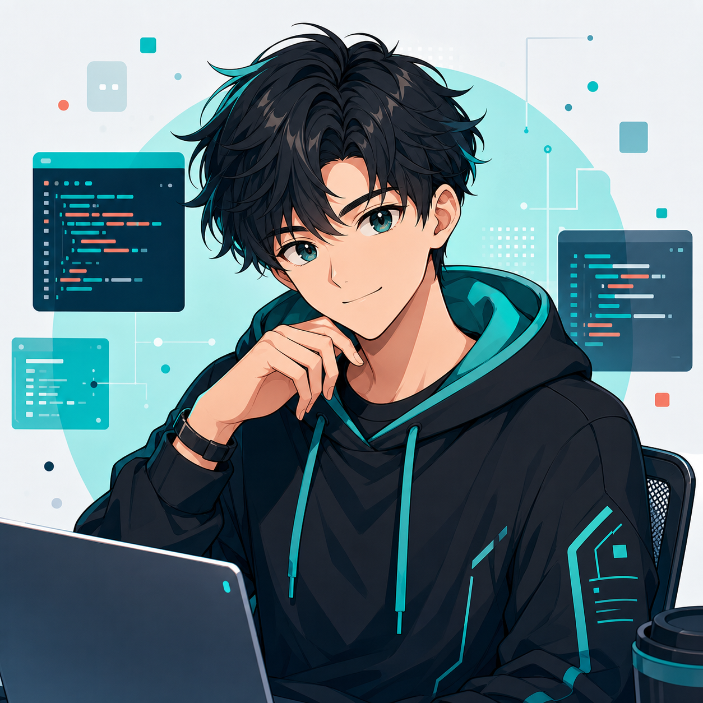

Никулин Артём Сергеевич
@R1cochet3
Идея, планировка и разработка сайта
Участвовал в создании общей концепции, продумывал структуру страниц и помогал собирать сайт так, чтобы продукт выглядел цельно, убедительно и понятно.
- Концепция
- Планировка
- Разработка
Открыть вклад участника
Подробный вклад
Артём работал над идеей финансового ассистента, логикой подачи информации и смысловой структурой сайта. Он помог выстроить путь пользователя: сначала показать проблему, затем объяснить возможности приложения и привести к команде проекта.
В разработке сайта он участвовал в планировке блоков, навигации, текстовой подаче и общей сборке страниц, чтобы интерфейс не выглядел случайным набором секций, а воспринимался как готовая презентация продукта.